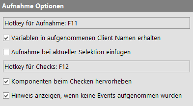
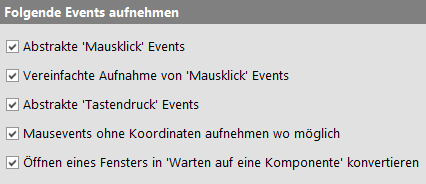
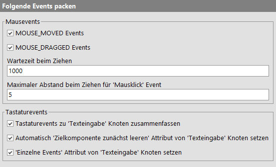
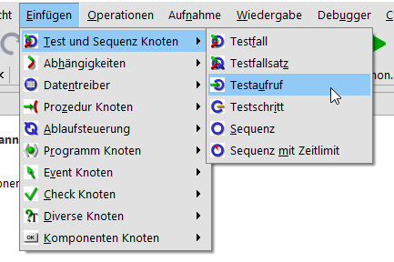
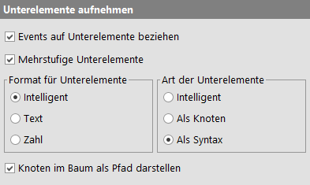
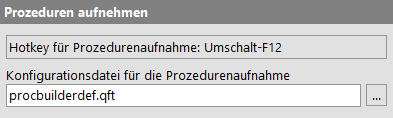

| Version 6.0.3 |
Über die Aufnahme-Optionen lässt sich festlegen, welche Events von QF-Test aufgezeichnet werden. Außerdem sind etliche Sonderbehandlungen von Events oder ganzen Sequenzen möglich.
|
|  | ||
|
| Abbildung 37.11: Aufnahme Optionen | ||
Steuert die Anzeige eines initialen Fragezeichens auf dem Aufnahmeknopf, um neuen Benutzern direkt den Weg zum Schnellstart-Assistenten zu weisen.
Der Aufnahmemodus kann mittels einer Taste direkt im SUT gestartet und gestoppt werden. Mit dieser Option legen Sie die Taste für diese Funktion fest in dem Sie in das Feld klicken und die gewünschte Tastenkombination drücken. Die Standardtaste ist [F11].
Ein sehr nützliches Feature für fortgeschrittene Anwender: Wenn
Ihr SUT aus mehreren Clients besteht oder Sie einfach nur
wiederverwendbare Tests erstellen wollen, ist es sehr sinnvoll,
den Clientnamen in den verschiedenen Events, Checks etc. nicht
fest einzugeben, sondern über eine Variable festzulegen (z.B.
$(client)).
Damit müssten Sie aber jedes mal, wenn Sie eine Aufnahme gemacht haben, den Namen des Clients in allen neuen Events durch die variable Angabe ersetzen, was zwar Dank »Bearbeiten«-»Suchen und ersetzen« in einem Rutsch geht, aber immer noch lästig ist. Wenn Sie diese Option aktivieren und beim 'Java SUT Client starten' ebenfalls die variable Syntax verwenden, wird diese bei den Aufnahmen automatisch an Stelle des expandierten Namens eingesetzt.
Ein sehr nützliches Feature: Je nachdem woran Sie gerade arbeiten, kann es sinnvoll sein, eine Aufnahme direkt an der Einfügemarkierung einzufügen - oder auch nicht. Ist diese Option gesetzt, werden alle neuen Events direkt eingefügt, andernfalls wird eine neue Sequenz mit der Aufzeichnung in den 'Extrasequenzen' angelegt.
Wenn sich QF-Test im Aufnahmemodus befindet, können Sie im SUT mittels einer Taste zwischen der normalen Aufzeichnung und der Aufzeichnung von Checks hin und her schalten. Mit dieser Option legen Sie die Taste für diese Funktion fest in dem Sie in das Feld klicken und die gewünschte Tastenkombination drücken. Die Standardtaste ist [F12].
Wenn Sie einen Check aufzeichnen, kann QF-Test eine kleine Hilfestellung geben, indem es die Komponente hervorhebt, über der sich der Mauszeiger gerade befindet. Dies geschieht durch Vertauschen von Vorder- und Hintergrundfarbe der Komponente, was vereinzelt zu unerwünschten visuellen Effekten führen kann. Daher können Sie diese Funktionalität hiermit abschalten.
Wenn eine Aufnahme gestartet und wieder beendet, ohne zwischendurch mit dem SUT zu interagieren, wird ein Hinweisdialog angezeigt, dass keine Events aufgenommen wurden. Durch Deaktivieren dieser Option kann dieser Dialog unterdrückt werden.
Über diese Schalter lassen sich gezielt Events ein- oder ausschalten. Im Prinzip gilt hier: Finger weg, die Defaultwerte sind OK. In besonderen Fällen kann es aber doch sinnvoll sein, mit den Schaltern zu experimentieren.
|
|  | ||
|
| Abbildung 37.12: Optionen für die Aufnahme von Events | ||
Ist diese Option aktiviert, wird eine Abfolge von MOUSE_MOVED,
MOUSE_PRESSED, MOUSE_RELEASED und MOUSE_CLICKED Events als
'Mausklick' Pseudoevent aufgenommen (vgl.
Abschnitt 38.8.1).
Werden 'Mausklick' Events aufgenommen, sollte diese Option ebenfalls aktiviert sein. Außer für Drag&Drop
und einige spezielle MOUSE_MOVED Events basiert die Aufnahme dann primär auf der Umwandlung von
MOUSE_PRESSED Events in Mausklicks. Dies liefert in den meisten Fällen die besten Ergebnisse, selbst
wenn QF-Test vom SUT zu wenige oder zu viele Events empfängt. Ist diese Option deaktiviert, kommt der
Algorithmus von QF-Test 4.0 und älter zum Einsatz. Dieser ist einen Versuch wert, wenn eine aufgenommene
Sequenz einmal nicht direkt wiedergegeben werden kann.
Hiermit können Sie eine Abfolge von KEY_PRESSED,
KEY_TYPED und KEY_RELEASED Events (bzw. nur KEY_PRESSED und
KEY_RELEASED für Funktions- und Sondertasten) automatisch als
'Tastendruck' Pseudoevent aufnehmen (vgl.
Abschnitt 38.8.2).
Für viele Arten von Komponenten und Unterelementen kommt es nicht darauf an, wo genau ein Mausevent registriert wird. Allerdings können große Werte für die X und Y Koordinaten von 'Mausevents' zu Problemen führen, wenn die Zielkomponente ein wenig kleiner wird, z.B. weil sich der Font geändert hat oder ein Fenster verkleinert wurde. Zu große Koordinaten sind auch eine häufige Fehlerursache, wenn eine aufgenommene Sequenz in eine 'Prozedur' mit variabler Zielkomponente konvertiert wird.
Ist diese Option aktiviert, ignoriert QF-Test die Koordinaten von Mausevents bei der Aufnahme, wenn es für die Zielkomponente keinen Unterschied macht, also z.B. für alle Arten von Buttons, Menüs, Zellen von Tabellen, Listeneinträgen und Baumknoten. Bei letzteren unterscheidet QF-Test zwischen Klicks auf den Knoten selbst und Klicks auf den Schalter zum Ein- und Ausklappen. Bei der Wiedergabe von Mausevents ohne Koordinaten steuert QF-Test die Mitte der Zielkomponente bzw. des Unterelements an, wobei für Unterelemente die X-Koordinate auf 5 begrenzt ist, da die Maße von Unterelementen nicht immer zuverlässig ermittelt werden können.
Wenn während einer Aufnahme im SUT ein neues Fenster geöffnet wird, ist es oft
sinnvoll, beim Abspielen der Sequenz an dieser Stelle erst zu warten, bis das
Fenster erschienen ist, bevor Events an Komponenten des Fensters geschickt werden.
Ist diese Option eingeschaltet, wird ein WINDOW_OPENED Event automatisch in einen
'Warten auf Komponente' Knoten konvertiert.
Diese Option hat seit der Einführung des impliziten Wartens stark an Bedeutung verloren.
Web Für Web Clients wird bei Aktivierung dieser Option ein 'Warten auf Laden des Dokuments' Knoten jeweils dann eingefügt, wenn das Laden eines Dokuments abgeschlossen ist. Dies ist für die zuverlässige Synchronisation beim Navigieren zu einer anderen Seite sehr wichtig.
Machen Sie einmal ein Experiment und nehmen Sie eine kleine Sequenz auf, nachdem Sie die folgenden Optionen ausgeschaltet haben. Sie werden überrascht sein, wie viele Events generiert werden, nur um ein paar kleine Aktionen durchzuführen. Damit diese Flut beherrschbar bleibt gibt es in QF-Test verschiedene Möglichkeiten, Events zu filtern oder Eventsequenzen zusammenzupacken.
|
|  | ||
|
| Abbildung 37.13: Optionen für das Packen von Events | ||
MOUSE_MOVED Events (System)
Gerade MOUSE_MOVED Events werden in besonders
großer Zahl generiert, wenn Sie Aktionen mit der Maus
durchführen. Im Normalfall ist von einer ununterbrochenen
Folge von diesen Events nur der letzte interessant (eine
Ausnahme wäre z.B. das Freihand-Zeichnen in einem
Grafikprogramm). Ist diese Option eingeschaltet, werden die
überflüssigen MOUSE_MOVED Events
herausgefiltert.
Hinweis Da auch die Events
MOUSE_PRESSED, MOUSE_RELEASED und
MOUSE_CLICKED Koordinaten enthalten, könnte man
annehmen, dass MOUSE_MOVED Events gänzlich
überflüssig sind. Dies ist nicht der Fall. Manche Java
Komponenten reagieren auf einen Mausklick nur, wenn vorher
die Maus tatsächlich dorthin bewegt wurde.
MOUSE_DRAGGED Events (System)
Bei den MOUSE_DRAGGED Events verhält es sich
ähnlich wie bei den MOUSE_MOVED Events: Nur der
letzte in einer aufeinanderfolgenden Sequenz ist normalerweise
von Bedeutung. Die Filterung ist daher analog zu den
MOUSE_MOVED Events.
Es gibt Situationen, in denen nicht alle MOUSE_DRAGGED Events gefiltert werden
dürfen. Ein typisches Beispiel ist das Öffnen eines Untermenüs.
Hinweis Das folgende Beispiel stimmt so nicht mehr, da QF-Test seit
Version 1.05.2 keine MOUSE_MOVED oder MOUSE_DRAGGED
Events mehr "wegoptimiert", die für das Öffnen eines Untermenüs benötigt werden.
Es gibt aber vielleicht ähnlich geartete Situationen geben, bei denen die Aufnahme
von Zwischenstationen beim Ziehen der Maus sinnvoll sein kann.
|
|  | ||
|
| Abbildung 37.14: Ziehen in ein Untermenü | ||
Wie das obige Bild illustriert, könnten Sie in QF-Test einen
neuen 'Testaufruf' Knoten in eine Suite einfügen, indem Sie zunächst auf das
»Eingabe« Menü klicken, dann bei
gedrückter Maustaste den Zeiger auf »Test und Sequenz Knoten« bewegen, so dass das Untermenü ausklappt
und letztlich den Zeiger auf »Testaufruf«
bewegen und dort loslassen. Sofern die obige Option zum
Packen von MOUSE_DRAGGED Events gesetzt ist, würde QF-Test das
gesamte Ziehen zu einem einzigen MOUSE_DRAGGED Event
zusammenfassen, nämlich dem letzten auf den »Testaufruf« Eintrag im Untermenü. Das Abspielen dieser
Sequenz würde scheitern, weil das Ziehen auf den »Test und Sequenz Knoten« Eintrag des Menüs übersprungen wird,
so dass das Untermenü nicht ausklappt.
Um dem vorzubeugen, können Sie beim Aufzeichnen der Sequenz
eine Weile mit dem Mauszeiger auf dem »Test und Sequenz Knoten« Eintrag des Menüs verharren. Daran erkennt
QF-Test dass es einen zusätzlichen MOUSE_DRAGGED Event
aufnehmen soll. Wie lange diese Ruhepause sein muss, legen Sie
mit dieser Option fest.
Es kommt vor, dass der Mauszeiger unabsichtlich zwischen dem
Drücken und Loslassen einer Maustaste bewegt wird. Je nach
JDK Version und der Größe der Bewegung kann das als
MOUSE_DRAGGED Event registriert werden. Für kleine Bewegungen
kann QF-Test diesen ignorieren um trotzdem einen 'Mausklick'
Event zu erstellen. Diese Option legt fest, welche Distanz
QF-Test noch als einen Klick interpretiert. Ein MOUSE_DRAGGED
Event, der darüber hinaus geht, wird unverändert übernommen.
Auch für die simple Eingabe eines kurzen Textes werden
massenhaft Events generiert. Würde man nur mit den normalen
KEY_PRESSED, KEY_TYPED und
KEY_RELEASED Events arbeiten, wäre dies nicht
nur unübersichtlich, es wäre auch unmöglich, variablen
Text zu erzeugen.
Ist diese Option gesetzt, werden Folgen von Tastaturevents in
eine 'Texteingabe' umgewandelt, sofern die Komponente
ein Textfeld ist (genauer: von der Klasse
java.awt.TextField oder
javax.swing.text.JTextField). Dabei werden nur
normale Tasten (auch in Kombination mit der [Shift] Taste)
berücksichtigt. Sondertasten und Kombinationen mit [Strg]
oder [Alt] werden nicht gepackt.
Beim Abspielen einer gepackten Textsequenz werden nur
KEY_TYPED Events generiert, die
KEY_PRESSED und KEY_RELEASED Events
dagegen unterdrückt.
Diese Option bestimmt den Wert des Attributs 'Zielkomponente zunächst leeren' eines neu aufgenommenen 'Texteingabe' Knotens. Ist die Option nicht gesetzt, wird auch das Attribut nicht gesetzt, andernfalls wird das Attribut genau dann aktiviert, wenn das Textfeld vor Beginn der Eingabe leer war.
Hiermit wird der Wert des Attributs 'Einzelne Events wiedergeben' in neu aufgenommenen 'Texteingabe' Knoten festgelegt. Ist die Option gesetzt, wird das Attribut ebenfalls gesetzt, und umgekehrt. Der sichere Weg ist, diese Option eingeschaltet zu lassen. Bei einem typischen SUT, das keine eigenen KeyListener für Textfelder verwendet, sollte es keine Probleme geben, wenn das Attribut deaktiviert wird, um die Wiedergabe von 'Texteingabe' Knoten zu beschleunigen.
Allgemeine Informationen zur den Einstellungen zur Aufnahme von Klassen:
QF-Test kann Klassen von Komponenten auf unterschiedliche Arten aufzeichnen. Hierzu gliedert QF-Test Komponentenklassen in unterschiedliche Kategorien. Diese Kategorien sind die konkrete Klasse, die technologiespezifische Basisklasse, die generische Klasse sowie der spezielle Typ der generischen Klasse. Jede Kategorie wird unter 'Weitere Merkmale' aufgezeichnet.
Die Option Generische Klassen für Komponenten aufzeichnen ist die Standardeinstellung und bewirkt, dass generische Klassen aufgezeichnet werden. Mit dieser Einstellung können Ihre Tests auch für unterschiedliche Technologien mit minimalen Anpassungen lauffähig gemacht werden.
Swing Wenn Sie eine Java Anwendung haben, die nur auf einer Technologie aufbaut und lieber die "echten" Java Klassen sehen möchten, können Sie auch ohne generische Klassen arbeiten. Hierfür sollten Sie aber die Option Nur Systemklassen aufnehmen einschalten. Diese Option bewirkt, dass jeweils die Basisklasse der jeweiligen Java-Technologie aufgezeichnet wird und nicht die konkrete abgeleitete Klasse. Falls Sie diese Option ausschalten, zeichnet QF-Test die konkrete Klasse des Objektes auf, welches zwar eine sehr gezielte Wiedererkennung auf Klassenebene bringt, allerdings bei Änderungen durch Refactoring der Klassen zu Anpassungsaufwand führt. Falls die konkreten Klassen obfuskiert sind, sollte diese Option auf keinen Fall aktiviert werden.
|
|  |
||
|
| Abbildung 37.15: Option für die Aufnahme von Komponenten | ||
Hiermit legen Sie eine Taste (bzw. Tastenkombination) fest, mit der Sie das SUT in einen speziellen Modus ähnlich dem Aufzeichnungsmodus für Checks schalten können. Klicken Sie hierzu in das Feld und drücken Sie die gewünschte Tastenkombination. Die Standardtastenkombination ist [Shift-F11].
In diesem Modus wird eine Komponente, die Sie mit der Maus anklicken, an QF-Test übermittelt. Dort wird falls noch nicht vorhanden, wie nach einer Aufnahme ein entsprechender Knoten unterhalb des 'Fenster und Komponenten' Knotens eingefügt. Außerdem steht die QF-Test ID der Komponente im Clipboard zur Übernahme mit [Strg-V] bereit.
|
|  |
||
|
| Abbildung 37.16: Popupmenü zum Aufnehmen von Komponenten | ||
Sie können auch eine ganze Hierarchie von Komponenten in einem Schritt aufzeichnen. Klicken Sie hierzu, nachdem Sie in diesen speziellen Modus geschaltet haben, mit der rechten Maustaste auf eine beliebige Komponente. Sie erhalten dann ein Popupmenü, in dem Sie vier Möglichkeiten zur Auswahl haben:
setName. Sie zeichnet alle Komponenten im
gesamten Fenster auf und legt diese in einer eigenen
Testsuite ab. Alle Komponenten ohne eigenen Namen, für die
ein Name zur Verbesserung der Testsicherheit sinnvoll
erscheint, werden markiert. Hierzu erhalten diese einen
Namen im Format "SUGGESTED NAME (n): Vorschlag". Die
fortlaufende Zahl in Klammern dient nur zur Vermeidung von
Duplikaten. Den Vorgeschlagenen Namen setzt QF-Test aus der
Klasse der Komponente und sonstigen verfügbaren
Informationen zusammen. Er sollte nur als Anregung
verstanden werden.
Wenn Sie eine einzelne Komponente abfragen wollen, drücken Sie im SUT einfach die hier eingestellte Taste. Nachdem Sie eine Komponente angeklickt haben und diese übermittelt wurde, schaltet das SUT von selbst in den vorherigen Modus zurück. Wenn Sie zusätzlich eine der Tasten [Shift], [Strg] oder [Alt] drücken und diese nicht zur Tastenkombination selbst gehört, schaltet das SUT dauerhaft in diesen Modus. Zum Beenden drücken Sie einfach noch einmal den "Hotkey".
Wenn Sie mehrere Testsuiten geöffnet haben, müssen Sie mit Hilfe des Menüeintrags »Aufnahme«-»Komponenten empfangen« festlegen, an welche Suite die auf diese Weise aufgenommenen Komponenten übermittelt werden sollen.
Wenn möglich weist QF-Test Komponenten Abschnitt 5.4.1.1 wie "Button", "Table" oder "Tree" zusätzlich zu den Java, DOM oder AJAX spezifischen Klassennamen wie "javax.swing.JButton", "javafx.scene.control.Button", "INPUT" oder "X-BUTTON" zu. Diese generischen Klassennamen sind verständlicher und robuster, verbessern die Kompatibilität zwischen verschiedenen Arten von Oberflächen und unterstützen die Entwicklung von generischen Prozeduren. Generische Klassennamen können für die Wiedererkennung von Komponenten und zur Registrierung von Resolvern verwendet werden. Ist diese Option gesetzt, zeichnet QF-Test den generischen Klassennamen auf, sofern vorhanden. Weitere Informationen finden Sie in im einleitenden Teil dieses Abschnitts.
Ist diese Option gesetzt, nimmt QF-Test nur Standardklassen für 'Komponenten' auf. Für kundenspezifische Klassen wird die Klassenhierarchie nach oben abgearbeitet, bis eine Standardklasse erreicht ist. Aktivieren Sie diese Option, wenn sich die Namen der GUI-Klassen Ihres Programms hin und wieder ändern. Weitere Informationen finden Sie im einleitenden Teil dieses Abschnitts.
Hinweis Sie müssen diese Option auf jeden Fall aktivieren, wenn Sie die jar Archive Ihrer Applikation durch Obfuscation schützen wollen, oder wenn die GUI Klassen mit einem eigenen ClassLoader geladen werden.
Für die Kompatibilität mit älteren QF-Test Versionen, die keine generischen Klassen kannten, zieht QF-Test bei der Aufnahme zum Vergleich mit bestehenden Komponenten mehrere Klassen einer Komponente heran, die konkrete, die generische und die Systemklasse. Dies ist sehr hilfreich, wenn Sie Ihre alten Komponenten so weit möglich erhalten wollen. Wenn Sie stattdessen lieber generell neue Komponenten basierend auf generischen Klassen aufnehmen möchten, schalten Sie diese Option aus. Für Komponenten, die zum ersten mal aufgenommen werden, richtet sich die Klasse immer nach den beiden vorhergehenden Optionen Generische Klassen für Komponenten aufzeichnen und Nur Systemklassen aufnehmen.
Falls Komponenten im SUT nicht-eindeutige Namen zugewiesen wurden, kann QF-Test diese
Komponenten mit Hilfe des 'Weiteren Merkmals'
qfs:matchindex unterscheiden, welches den Index innerhalb der
Komponenten mit gleichem Namen angibt. Ist diese Option gesetzt, prüft QF-Test den
Namen der Komponente bereits bei der Aufnahme auf Eindeutigkeit und versucht
qfs:matchindex korrekt zu setzen.
Hinweis Sie sollten diese Option nur dann deaktivieren, wenn Sie sicher sind, dass Namen von Komponenten weitestgehend eindeutig sind und die Validierung die Performance bei der Aufnahme spürbar beeinträchtigt.
Swing unterstützt HTML Auszeichnungen für verschiedene Arten von Labels, Buttons und Unterelementen von komplexen Komponenten. Bei der Identifizierung und Validierung von Komponenten sind die HTML Tags oft im Weg. Ist diese Option gesetzt, konvertiert QF-Test HTML in normalen Text, indem es alle HTML Tags entfernt, so dass nur der reine Textinhalt erhalten bleibt.
Hinweis Es gibt zwei Varianten dieser Option, die sehr eng miteinander verknüpft sind. Diese Variante ist während der Aufnahme aktiv, die andere bei der Wiedergabe. Natürlich sollten beide Optionen immer den selben Wert haben - mit einer Ausnahme: Wenn Sie von einer Einstellung zu einer anderen wechseln wollen, müssen eventuell Komponenten in QF-Test aktualisiert werden. Bei diesem Prozess ist es notwendig, zunächst die Einstellung für die Wiedergabe auf dem alten Wert zu lassen und nur die Aufnahme Option umzustellen. Denken Sie aber unbedingt daran, nach Abschluss der Aktualisierung auch die Wiedergabe Option umzustellen.
Diese Option legt fest, welches Gewicht dem Namen bei der Aufnahme von Komponenten beigemessen wird. Folgende Einstellungen sind möglich:
Name übertrifft alles
Dies ist die wirksamste und flexibelste Möglichkeit, Komponenten zu erkennen. Sie
setzt allerdings voraus, dass die Namen der Komponenten zumindest pro Fenster
eindeutig sind. Wenn diese Eindeutigkeit gegeben ist, verwenden Sie diese
Einstellung.
WebVerwenden Sie diesen Wert nicht bei Webseiten mit Frames. Für diese
ist "Hierarchie von Namen" besser geeignet.
Hierarchie von Namen
Diese Einstellung sollten Sie verwenden, wenn Namen zwar nicht in jedem Fenster
eindeutig vergeben sind, aber Komponenten mit gleichen Namen zumindest in
unterschiedlichen Komponenten mit verschiedenen Namen enthalten sind, so dass
sich eine Eindeutige Namenshierarchie ergibt. Damit ist die Wiedererkennung immer
noch sehr tolerant gegenüber Veränderungen. Erst wenn Sie eine benannte Komponente
in eine andere benannte Komponente verschieben, muss die Testsuite an diese
Veränderung angepasst werden.
Normales Attribut
Falls es Komponenten mit identischen Namen im SUT gibt, die zudem in der
gleichen Parent Komponente liegen, bleibt nur noch diese Einstellung. Der Name
spielt damit immer noch eine wichtige Rolle, aber kaum mehr als das
'Merkmal' Attribut.
Eclipse und Anwendungen, die auf der Rich Client Platform (RCP) basieren, verfügen
über ein komplexes GUI mit Unterstützung für wechselnde Perspektiven. Bei einem
solchen Wechsel werden die Komponenten neu arrangiert, was die Wiedererkennung für
QF-Test schwierig macht, wenn nicht wenigstens für die wichtigsten Komponenten Namen
gesetzt werden. Zusätzlich kompliziert wird es dadurch, dass die Struktur der
Komponenten nicht der optischen Darstellung entspricht. Die Komponenten sind
stattdessen relativ flach in der Workbench angeordnet. Positiv ist dagegen, dass
RCP basierte Anwendungen über eine einheitliche innere Struktur basierend auf
Views und Editors verfügen, von denen viele einen Namen
besitzen.
Falls diese Option aktiviert ist, versucht QF-Test automatisch die GUI Komponenten
mit Ihren RCP Gegenstücken zu assoziieren und auf dieser Basis Namen für die
Komponenten zu ermitteln. Dies kann die Wiedererkennung der Komponenten drastisch
verbessern. Falls einige dieser automatisch ermittelten Namen allerdings nicht
dauerhaft stabil sein sollten, können diese auch ein Hindernis darstellen. In
diesem Fall kann für die Betroffenen Komponenten ein Name gesetzt werden, entweder
mittels setData wie in Kapitel 5 beschrieben,
oder mit Hilfe eines NameResolvers wie in Abschnitt 50.1.6 beschrieben. Beide Methoden haben Vorrang vor
automatisch generierten Namen.
QF-Test bietet verschiedene Sichtweisen auf die Komponenten des SUT.
In der flachen Sicht sind alle Komponenten eines Fensters gleichwertig unter diesem angeordnet. Für ein einfaches Fenster mag diese Sicht genügen, für komplexere Fenster geht nicht nur die Übersicht verloren, sondern auch wertvolle Strukturinformation für die Wiedererkennung.
Das Gegenteil zur flachen Sicht ist die volle Hierarchie. Hier werden alle Komponenten des SUT 1:1 übernommen und in einer entsprechenden Baumstruktur angeordnet. Diese Darstellung kann wertvolle Informationen für Entwickler liefern, hat aber den Nachteil, dass das Einfügen einer weiteren Zwischenkomponente im SUT die Strukturinformationen ungültig macht und die Wiedererkennung aller Childkomponenten dieser neuen Komponente verhindert.
Die Auswahl "Intelligent" liefert einen Kompromiss aus den
beiden Extremwerten. Hiermit werden nur die "interessanten"
Komponenten aus der Hierarchie des SUT
übernommen. Komponenten wie JPanel, die
ausschließlich der Strukturierung dienen, werden nicht
aufgezeichnet. Die Verschachtelungstiefe des Baums wird
dadurch deutlich reduziert. Im Moment ist die
Entscheidungslogik, welche Komponenten als "interessant"
anzusehen sind, hart verdrahtet. In späteren Versionen wird
sie konfigurierbar sein.
Ist diese Option aktiviert stellt QF-Test bei der Aufnahme einer 'Komponente' deren 'QF-Test ID' die 'QF-Test ID' des zugehörigen 'Fenster' Knotens voran. Dies ist sinnvoll zur Unterscheidung von Komponenten mit gleichem Namen in verschiedenen Fenstern.
Wenn bei einer Aufnahme eine neue 'Komponente' angelegt wird, vergibt QF-Test automatisch eine 'QF-Test ID'. Dieser ID kann wahlweise die 'QF-Test ID' eines direkten oder indirekten Parentknotens der Komponente - durch einen Punkt getrennt - vorangestellt werden. Dies ist vor allem nützlich, um häufig auftretende Komponenten, die keinen eigenen Namen haben, unterscheidbar zu machen.
Beispiel: Angenommen es gibt zwei JScrollPanes,
von denen eine "TreeScrollPane" und die andere
"DetailScrollPane" heißt. Ohne diese Funktion
würden die beiden vertikalen Scrollbars die QF-Test IDs
"scrollbarVertical" und
"scrollbarVertical2" erhalten. Mit dieser Funktion
erhalten sie dagegen die QF-Test IDs
"TreeScrollPane.scrollbarVertical" und
"DetailScrollPane.scrollbarVertical". Damit können
Sie bei Events sofort erkennen, worauf sich diese beziehen.
Es gibt vier mögliche Einstellungen:
setName
einen Namen gegeben haben. Eine Komponente, die selbst
keinen Namen hat, bekommt den Namen des ersten seiner
direkten und indirekten Parentknoten vorangestellt, der
einen eigenen Namen hat.
setName arbeiten, ist die Einstellung "Nächster
Vorgänger mit Name oder Merkmal" besser geeignet. Neben dem
Namen eines Parentknotens kann auch dessen Merkmal
ausschlaggebend sein.
Bei komplexen Komponenten wie Tabellen oder Bäumen können Events wahlweise so aufgenommen werden, dass sie sich auf Unterelemente der Komponenten beziehen und ihre Koordinaten relativ zu diesen Unterelementen sind.
|
|  | ||
|
| Abbildung 37.17: Option für die Aufnahme von Unterelementen | ||
Die oben beschriebene Funktionalität wird mit diesem Schalter aktiviert. Ist diese Option ausgeschaltet, beziehen sich neu aufgenommene Events immer auf die Komponente, nicht auf ein Unterelement.
Über diese Option können Sie mehrstufige Unterelemente komplett ausschalten (auch für die Wiedergabe), was Sie aber nur tun sollten, wenn Sie Probleme mit alten Testsuiten haben, die ungeschützte Sonderzeichen wie '@' oder '%' im textuellen Index von Unterelementen enthalten. Allerdings wäre es in diesem Fall vorzuziehen, die Testsuiten zu aktualisieren und die Unterelemente korrekt zu schützen, ggf. über die spezielle Variablensyntax ${quoteitem:...} (vgl. Abschnitt 6.5).
Wenn Events sich auf Unterelemente einer Komponente beziehen, können Sie mit diesem Schalter festlegen, ob der Text der Elemente oder deren Position aufgenommen wird. Der Index für das Element wird in der entsprechenden Form als Text bzw. als Zahl angelegt.
Mittels des Schalters "Intelligent" können Sie die Entscheidung QF-Test übertragen. Der Index wird dann als Text erstellt, sofern der Name des Elements innerhalb der komplexen Komponente eindeutig ist. Andernfalls wird der Index als Zahl angelegt.
Hiermit entscheiden Sie, ob bei der Aufnahme eines Events für ein Unterelement ein 'Element' Knoten für dieses Unterelement in der Testsuite angelegt wird, oder ob das Element direkt im Attribut 'QF-Test ID der Komponente' des 'Mausevent' Knotens angegeben wird (vgl. Abschnitt 5.9).
Wenn Sie mit dem Schalter "Intelligent" QF-Test die Wahl überlassen, wird nur dann ein Knoten angelegt, wenn der Index als Text angegeben ist und das Unterelement im SUT nicht editierbar ist.
Es ist nicht ungewöhnlich, dass in einer Baumstruktur Knoten
mit gleichen Namen aber verschiedenen Vaterknoten vorkommen,
z.B. in einem Unix Dateisystem die Verzeichnisse
/tmp und /usr/tmp. Durch Ausnutzen
der hierarchischen Struktur und Verwendung von Pfadnamen
in den 'Elementen' kann
QF-Test diese Knoten unterscheiden. Dabei kommt das Zeichen
'/' als Trennzeichen zum Einsatz.
Ist diese Option nicht aktiviert, werden Bäume wie flache Listen betrachtet.
Die folgenden Optionen haben Einfluss auf den Procedure Builder, der in Kapitel 24 detailliert beschrieben wird.
|
|  | ||
|
| Abbildung 37.18: Procedure Builder Optionen | ||
Diese Option legt eine Taste (bzw. Tastenkombination) fest, mit der die Aufnahme von Prozeduren direkt im SUT eingeschaltet werden kann. Klicken Sie hierzu ni das Feld und drücken Sie die gewünschte Tastenkombination. Die Standardtastenkombination ist [Shift-F12].
Hier können Sie eine eigene Konfigurationsdatei für den Procedure Builder festlegen. Ist ein relativer Pfad angegeben, sucht QF-Test im Verzeichnis, aus dem QF-Test gestartet wurde, und im standard Include-Verzeichnis nach dieser Datei.
| Letzte Änderung: 6.9.2022 Copyright © 1999-2022 Quality First Software GmbH |